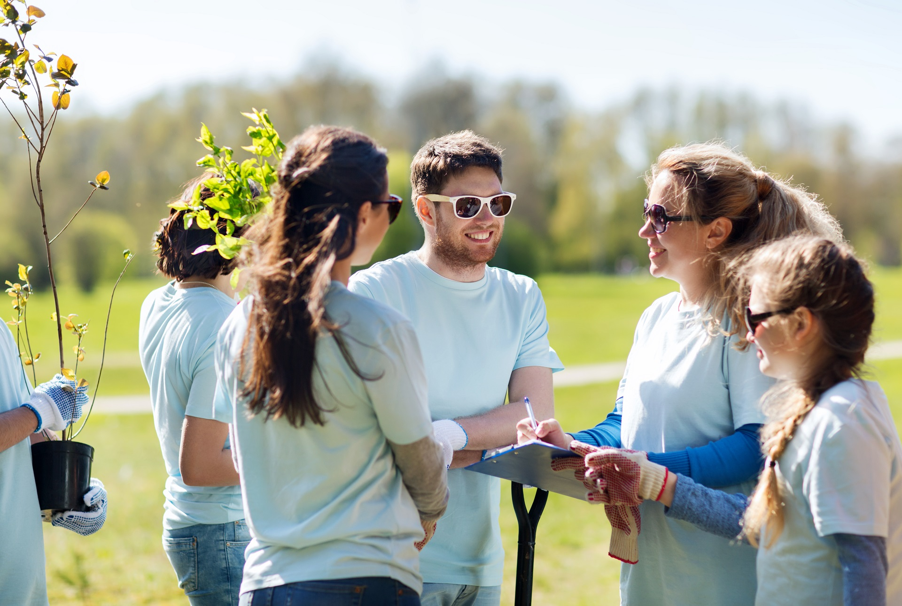
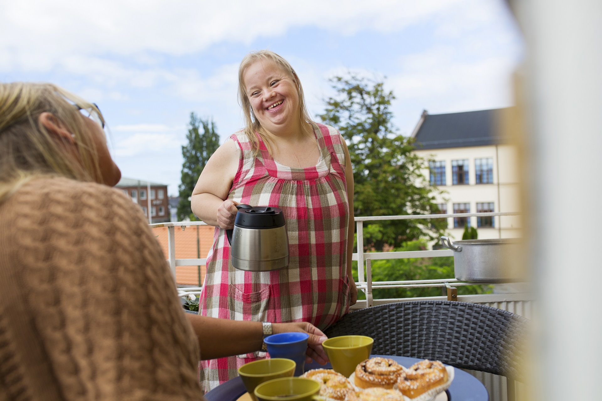

July 20, 2026
Making a Real Difference in Our Community
Discover how our recent volunteering and community support initiatives are bringing people together and creating positive, lasting change for those in need.
Read MoreWe hosted a wonderful afternoon bridging the gap between generations. Read about the joy and shared experiences that highlight the importance of connection.
At Care Solutions Hub, we firmly believe that true community care extends beyond the front door of an individual’s home. It’s about building a robust, inclusive network where everyone has the opportunity to contribute and thrive. Last weekend, our dedicated team of staff and service users demonstrated exactly what this looks like during our latest community initiative.
Engaging in community service not only helps local charities and environmental efforts, but it fundamentally transforms the individuals who participate. The opportunity to give back fosters a deep sense of purpose, self-worth, and belonging. It breaks down societal barriers and challenges the stigma that individuals with learning disabilities and autism are only recipients of care, rather than active community contributors.
By volunteering alongside local residents, the people we support formed new friendships, practiced essential communication skills, and proved that their capabilities far exceed societal expectations. The smiles and laughter shared over the course of the day were a testament to the power of inclusion.
We are dedicated to maintaining and restoring community presence for those we support. Too often, exclusion occurs due to a lack of skilled, person-centred support. Our experienced leadership team is committed to reversing this trend by building strong, capable support networks that empower individuals to thrive within their communities.
We look forward to continuing these efforts and expanding our community outreach programs throughout the year. Together, we can create an environment where everyone has the opportunity to live life with dignity and independence.

Discover how our recent volunteering and community support initiatives are bringing people together and creating positive, lasting change for those in need.
Read More
Navigating supported living can be challenging. In this post, we share practical insights and heartwarming stories of independence and growth.
Read MoreTogether, we can create an environment where everyone has the opportunity to live life with dignity and independence.